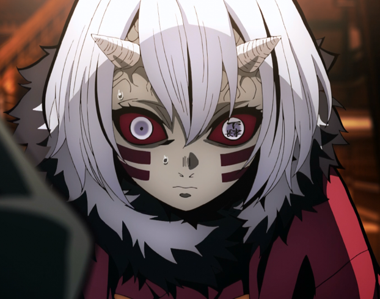

Overall Abilities: Little was known about Mukago's strength and abilities as a demon, but it can be assumed that she was stronger than an average demon and superior in power to Kamanue, as she was given a higher Lower Rank position than him.
Mukago (零む余か子ご Mukago?) was a member of the Twelve Kizuki, having held the position of Lower Rank Four (下か弦げんの肆し Kagen no Shi?).

Appearance
-
Mukago was a short woman of slight stature. She had very light gray skin, two dark red stripes across her cheeks, and a pair of white horns protruding from either side of her forehead. Her eyes were gray with white rings around the sides and dark red sclera, with the kanjis for "Lower Four" etched in her left eye. She also possessed chin-length white hair with shorter bangs between her horns.
-
Mukago wore a plain red kimono with a black-and-white fur-lined collar tied up at the back with a large, dark purple bow, white tabi socks, and black zōri shoes that have orange coloured straps.
Personality
Like most demons, Mukago held great fear and respect for Muzan Kibutsuji. However, out of all the Lower Ranks, she was also shown to be the most cowardly. As stated by Muzan through reading her thoughts, Mukago had no intention of battling the Demon Slayer Corps' Hashira and planned to flee at the mere mention of one, noted to have done so numerous times. When Muzan learned of this, Mukago attempted to deny her thoughts in an attempt to appease him.
Synopsis
Rehabilitation Training Arc
-
Following the death of Lower Rank Five, Rui, Mukago was summoned to the Infinity Castle by Nakime. She stood around the castle Before she comprehended her situation, she was immediately taken by Nakime to a platform with the rest of the Lower Ranks, where she fearfully looked around, joining Rokuro and Kamanue. Before them were Nakime to the side and a unknown female demon in front of them.
-
Initially confused, Mukago became terrified when the demon commanded them to bow down and kneel, instantly recognizing the demon is Muzan Kibutsuji, who had disguised himself to lower their guard about what he will do. She attempted to apologize on their behalf and claim they did not know it was him, only for her master to ruthlessly silence her, demanding she do not "voice her worthless thoughts". Muzan informed them about Rui's death and demanded to know why the Lower Ranks were so weak.
-
Mukago listened as Muzan lectured them about how being in the ranks of the Twelve Kizuki was only the starting point of when they can be useful to him, claiming their only role is to consume human flesh and gain power. The Demon King angrily stated that it had been over a century since the Upper Ranks were last replaced, yet the Lower Ranks were replaced repeatedly in that same time, causing Kamanue to scoff at the absurdity of his expectation.
-
Capable of reading their minds, Muzan angrily asked Kamanue why he couldn’t be told that, before expanding and extending his arm into a tentacle to grab the Lower Rank by his body and lift him into the air. Kamanue apologized and begged for forgiveness but was mercilessly devoured by Muzan, as Mukago and the rest of the Lower Ranks keep their heads lowered in shocked silence.
-
When they realized the direness of their situation, the Lower Ranks immediately panicked that they will be killed as well. Knowing their minds can be read by Muzan, they remained silent. Muzan went on to ask the Lowers if they are more afraid of the Demon Slayers than of him. Upon hearing this, Mukago spoke up and stated that she is not.
-
Muzan challenged her and claimed that all she thought about was fleeing whenever she encountered a Hashira. Under immense pressure and the threat of death, Mukago broke down in tears and said that she would put her life in peril for him. However, Muzan showed no gratitude to her loyalty and simply dismissed her pleas as contradicting his statement. Mukago watched as Muzan brought his monstrous arm down onto her body as she was instantly killed.